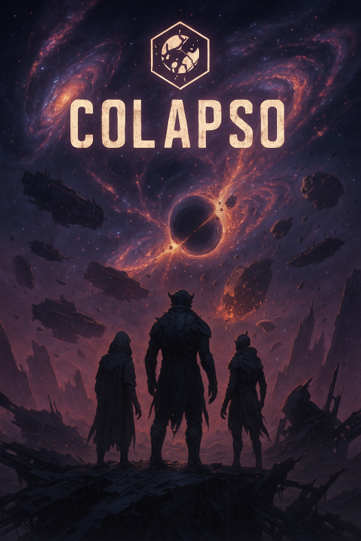

COLAPSO RPG
Prólogo
“Antes da primeira lâmina ser forjada, antes da primeira
chama ser acesa… havia as Estrelas. E agora, elas morrem.”
Durante milênios, os povos do mundo de Elarion viveram sob o brilho da
Constelação Perpétua — um círculo de doze galáxias que, segundo os arcanistas,
sustentavam o tecido da realidade. Cada galáxia era governada por um Primarca Estelar,
entidades divinas que garantiam equilíbrio entre as forças: magia, vida, tempo e morte.
Mas agora… as galáxias estão colapsando
Ninguém sabe por quê. Os céus tremem. Meteoros caem como
lágrimas flamejantes. O véu entre mundos se rompe, e monstros jamais vistos
surgem nas terras. Algumas estrelas explodem e riscam o céu com “linhas da morte”.
Os mais antigos reconhecem isso como o Fim dos Ciclos.
No centro do mundo está o Oráculo de Zynar, onde uma profecia antiga ressurge:
“Quando a última estrela do Leste morrer, os que resistirem terão que escolher:
reconstruir o céu… ou cair com ele.”
O Mundo em Ruína
Reinos de Elarion:
Solarion, o Reino Da Labareda – Antiga nação
do sol, agora em deserto após seu “Sol Gêmeo” colapsar.
Nythera, O Ciclo Lunar Perpétuo – Sacerdotisas e magos mantêm a sanidade do
tempo, mas os ciclos lunares estão quebrando.
Tharnak, o Abismo Ascendente – Fortaleza dos Forjadores Estelares, que tentam controlar
fragmentos de galáxias para criar armas divinas.
Val'Nir, a Floresta Sussurrante – Elfos antigos que escutam as vozes das galáxias morrendo.
A magia ali está corrompida, viva e faminta.
Ganchos de Campanha
Os Doze Talismãs Perdidos
Os heróis devem encontrar os últimos fragmentos de cada galáxia antes que os
Vazios-Errantes os consumam.
O Deus que Caiu Ny’Zhaar
Um Primarca Estelar, Ny’Zhaar, o Deus do Abismo Silencioso sobreviveu à queda de sua
galáxia e está morrendo… ou renascendo como algo terrível.
O Ritual da Ponte Estelar
Uma seita acredita que pode reconstruir uma ponte entre galáxias e salvar a
realidade — mas o preço é um sacrifício em escala continental.
O Escolhido
Um dos personagens descobre que é um recipiente para o renascimento de uma galáxia.
Eles são a esperança… ou a última ameaça.

O RPG Colapso conta com inúmeras classes, subclasses, habilidades e
monstos mágicos
Ele e Dividido em diversos portais ou Masmorras podendo variar
entre o rank S|A|B|C|D|E|F Sendo O F o mais fraco e S o mais forte
Descubra mais sobre o RPG
Classes
Items
Raças
Inimigos
Descrições Avançadas